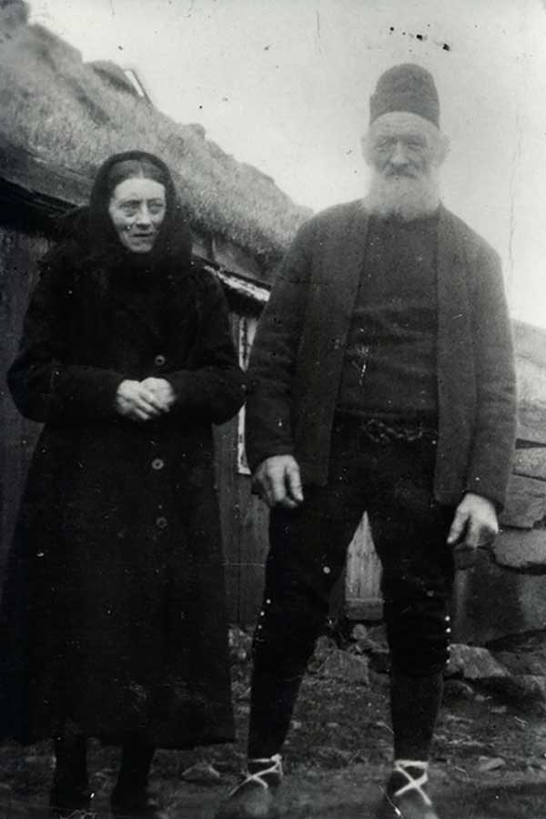
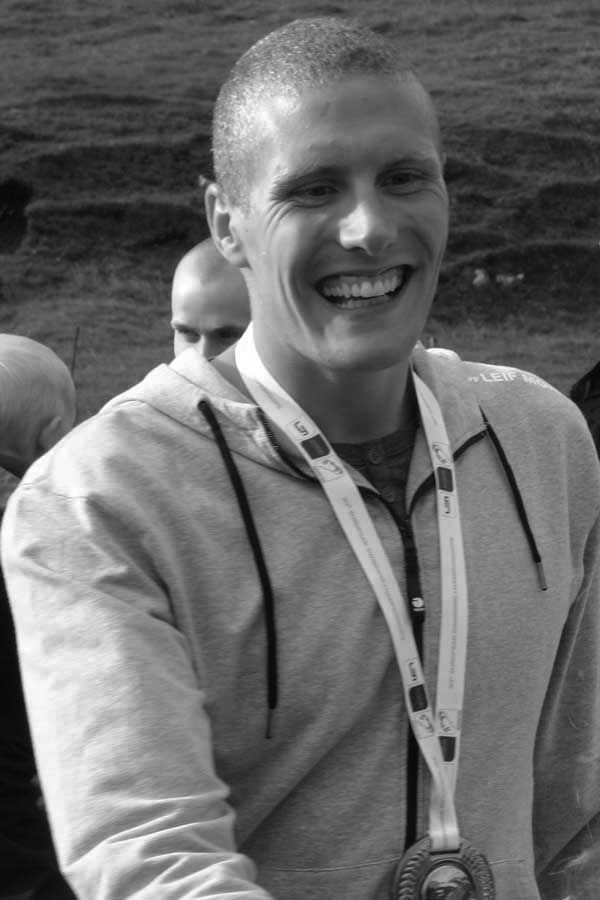
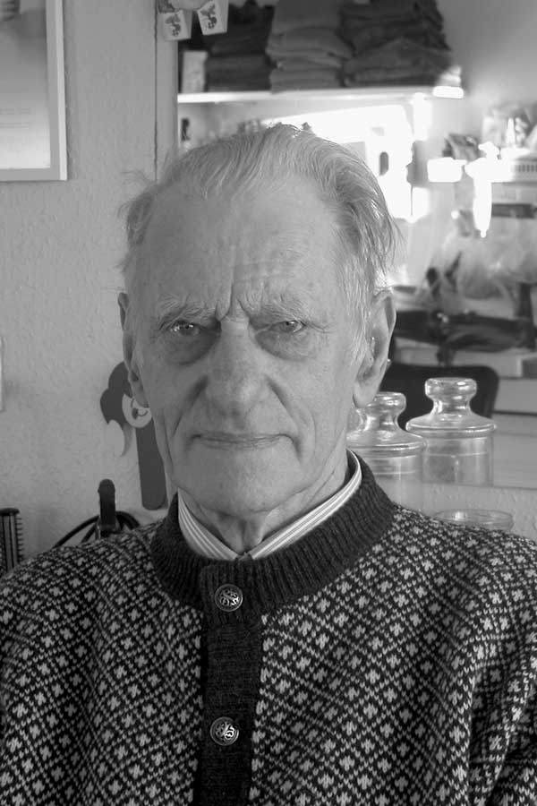
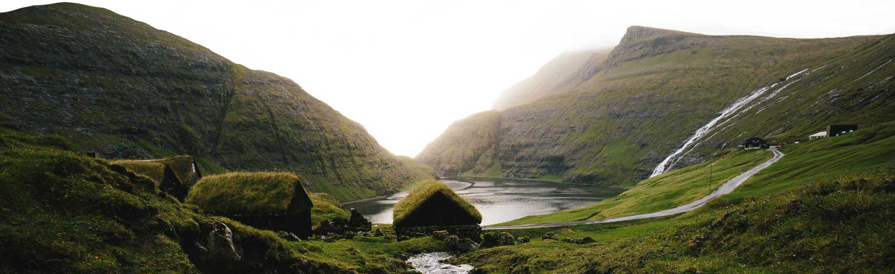
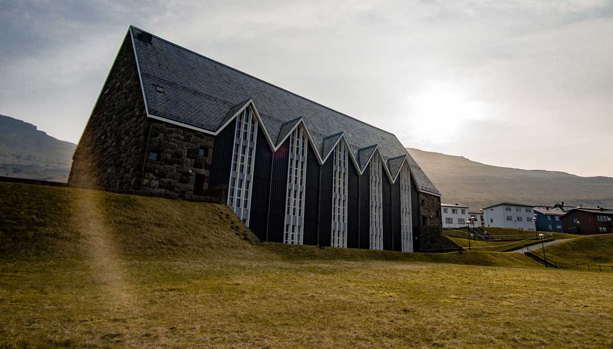

Demographics
The vast majority of the population are ethnic Faroese, of Norse and Celtic descent.
Recent DNA analyses have revealed that Y chromosomes, tracing male descent, are 87% Scandinavian.
The studies show that mitochondrial DNA, tracing female descent, is 84% Celtic.
There is a gender deficit of about 2,000 women owing to migration. As a result, some Faroese men
have married women from the Philippines and Thailand, whom they met through such channels as online
dating websites, and arranged for them to emigrate to the islands. This group of approximately three
hundred women make up the largest ethnic minority in the Faroes.
The total fertility rate of the Faroe Islands is currently one of the highest in Europe.
The fertility rate is 2.409 children born per woman (2015 est.).
The 2011 census shows that of the approximately 48,600 inhabitants of the Faroe Islands
(17,441 private households in 2011), 43,135 were born in the Faroe Islands, 3,597 were born
in the other two countries of the Kingdom of Denmark (Denmark or Greenland), and 1,614 were
born outside the Kingdom of Denmark. People were also asked about their nationality, including
Faroese. Children under 15 were not asked about their nationality. 97% said that they were ethnic
Faroese, which means that many of those who were born in either Denmark or Greenland consider
themselves as ethnic Faroese. The other 3% of those older than 15 said they were not Faroese:
515 were Danish, 433 were from other European countries, 147 came from Asia, 65 from Africa,
55 from the Americas, 23 from Russia. The Faroe Islands have people from 77 different nationalities.
If the first inhabitants of the Faroe Islands were Irish monks, they must have lived as a very
small group of settlers. Later, when the Vikings colonised the islands, there was a considerable
increase in the population. However, it never exceeded 5,000 until the 19th century. Around 1349,
about half the population perished in the Black Death plague.
Only with the rise of the deep-sea fishery (and thus independence from agriculture in the islands'
harsh terrain) and with general progress in the health service was rapid population growth possible
in the Faroes. Beginning in the 19th century, the population increased tenfold in 200 years.



The Faroese population is spread across most of the area; it was not until recent decades that
significant urbanisation occurred. Industrialisation has been remarkably decentralised, and the
area has therefore maintained quite a viable rural culture. Nevertheless, villages with poor harbour
facilities have been the losers in the development from agriculture to fishing, and in the most
peripheral agricultural areas, also known as Útoyggjar "Outer Islands", there are few young people.
In recent decades, the village-based social structure has nevertheless been placed under pressure,
giving way to a rise in interconnected "centres" that are better able to provide goods and services
than the badly connected periphery. This means that shops and services are now relocating en masse
from the villages into the centres, and slowly but steadily the Faroese population is concentrating
in and around the centres.
In the 1990s, the government abandoned the old national policy of developing the villages
(Bygdamenning), and instead began a process of regional development (Økismenning). The term
"region" referred to the large islands of the Faroes. Nevertheless, the government was unable to
press through the structural reform of merging small rural municipalities to create sustainable,
decentralised entities that could drive forward regional development. As regional development has
been difficult on the administrative level, the government has instead invested heavily in
infrastructure, interconnecting the regions.
In general, it is becoming less valid to regard the Faroes as a society based on separate islands and
regions. The huge investments in roads, bridges and sub-sea tunnels (see also Transport in the Faroe
Islands) have bound the islands together, creating a coherent economic and cultural sphere that covers
almost 90% of the population. From this perspective it is reasonable to regard the Faroes as a
dispersed city or even to refer to it as the Faroese Network City.
At the beginning of the 1990s, the Faroe Islands entered a deep economic crisis leading to heavy
emigration; however, this trend reversed in subsequent years to a net immigration. This has been in
the form of a population replacement as young Faroese women leave and are replaced with Asian/Pacific
brides. In 2011, there were 2,155 more men than women between the age of 0 to 59 in the Faroe Islands.
LANGUAGE
Faroese is spoken in the entire area as a first language. It is difficult to say exactly how many
people worldwide speak the Faroese language, because many ethnic Faroese live in Denmark, and few who
are born there return to the Faroes with their parents or as adults. Faroese belongs to the Germanic
branch of Indo-European languages.
Written Faroese (grammar and vocabulary) is most similar to Icelandic and to their ancestor Old Norse, though the spoken
language is closer to Norwegian dialects of Western Norway. Faroese is the first official language of
the island while Danish, the second, is taught in schools and can be used by the Faroese government in
public relations.
Faroese language policy provides for the active creation of new terms in Faroese
suitable for modern life.

EDUCATION
The levels of education in the Faroe Islands are primary, secondary and higher education. Most institutions are funded by the state; there are few private schools in the country. Education is compulsory for 9 years between the ages of 7 and 16.
Compulsory education consists of seven years of primary education and two years of lower secondary education; it is public, free of charge, provided by the respective municipalities, and is called the Fólkaskúli in Faroese. The Fólkaskúli also provides optional preschool education as well as the tenth year of education that is a prerequisite to get admitted to upper secondary education. Students that complete compulsory education are allowed to continue education in a vocational school, where they can have job-specific training and education. Since the fishing industry is an important part of country's economy, maritime schools are an important part of Faroese education. Upon completion of the tenth year of Fólkaskúli, students can continue to upper secondary education which consists of several different types of schools. Higher education is offered at the University of the Faroe Islands; a part of Faroese youth moves abroad to pursue higher education, mainly in Denmark. Other forms of education comprise adult education and music schools. The structure of the Faroese educational system bears resemblances with its Danish counterpart.
In the 12th century, education was provided by the Catholic Church in the Faroe Islands. The Church of Denmark took over education after the Protestant Reformation. Modern educational institutions started operating in the last quarter of the nineteenth century and developed throughout the twentieth century. The status of the Faroese language in education was a significant issue for decades, until it was accepted as a language of instruction in 1938. Initially education was administered and regulated by Denmark. In 1979 responsibilities on educational issues started transferring to the Faroese authorities, a procedure which was completed in 2002.
The Ministry of Education, Research and Culture has the jurisdiction of educational responsibility in the Faroe Islands. Since the Faroe Islands is a part of the Danish Realm, education in the Faroe Islands is influenced and has similarities with the Danish educational system; there is an agreement on educational cooperation between the Faroe Islands and Denmark. In 2012 the public spending on education was 8.1% of GDP. The municipalities are responsible for the school buildings for children's education in Fólkaskúlin from age 1st grade to 9th or 10th grade (age 7 to 16). In November 2013 1,615 people, or 6.8% of the total number of employees, were employed in the education sector. Of the 31,270 people aged 25 and above 1,717 (5.5%) have gained at least a master's degrees or a Ph.D., 8,428 (27%) have gained a B.Sc. or a diploma, 11,706 (37.4%) have finished upper secondary education while 9,419 (30.1%) has only finished primary school and have no other education. There is no data on literacy in the Faroe Islands, but the CIA Factbook states that it is probably as high as in Denmark proper, i.e. 99%.
The majority of students in upper secondary schools are women, although men represent the majority in higher education institutions. In addition, most young Faroese people who relocate to other countries to study are women.
Out of 8,535 holders of bachelor degrees, 4,796 (56.2%) have had their education in the Faroe Islands, 2,724 (31.9%) in Denmark, 543 in both the Faroe Islands and Denmark, 94 (1.1%) in Norway, 80 in the United Kingdom and the rest in other countries. Out of 1,719 holders of master's degrees or PhDs, 1,249 (72.7% have had their education in Denmark, 87 (5.1%) in the United Kingdom, 86 (5%) in both the Faroe Islands and Denmark, 64 (3.7%) in the Faroe Islands, 60 (3.5%) in Norway and the rest in other countries (mostly EU and Nordic). Since there is no medical school in the Faroe Islands, all medical students have to study abroad; as of 2013, out of a total of 96 medical students, 76 studied in Denmark, 19 in Poland, and 1 in Hungary.
RELIGION
According to the Færeyinga saga, Sigmundur Brestisson brought Christianity to the islands in 999.
However, archaeology at a site in Toftanes, Leirvík, named Bønhústoftin (English: prayer-house ruin)
and over a dozen slabs from Ólansgarður in the small island of Skúvoy which in the main display
encircled linear and outline crosses, suggest that Celtic Christianity may have arrived at least
150 years earlier. The Faroe Islands' Church Reformation was completed on 1 January 1540.
According to official statistics from 2019, 79.7% of the Faroese population are members of the state church,
the Church of the Faroe Islands (Fólkakirkjan), a form of Lutheranism. The Fólkakirkjan became an independent
church in 2007; previously it had been a diocese within the Church of Denmark. Faroese members of the clergy who
have had historical importance include Venceslaus Ulricus Hammershaimb (1819–1909), Fríðrikur Petersen (1853–1917)
and, perhaps most significantly, Jákup Dahl (1878–1944), who had a great influence in ensuring that the Faroese
language was spoken in the church instead of Danish. Participation in churches is more prevalent among the Faroese
population than among most other Scandinavians.
There are also around fifteen Bahá'ís who meet at four different places. The Ahmadiyyas established a
community in the Faroe Islands in 2010. Unlike Denmark, Sweden and Iceland with Forn Siðr, the Faroes have no organised Heathen
community.
In the late 1820s, the Christian Evangelical religious movement, the Plymouth Brethren, was established in England.
In 1865, a member of this movement, William Gibson Sloan, travelled to the Faroes from Shetland. At the turn of the 20th century, the Faroese Plymouth Brethren numbered thirty. Today, around 10% of the Faroese population are members of the Open Brethren community (Brøðrasamkoman). About 3% belong to the Charismatic Movement. There are several charismatic churches around the islands, the largest of which, called Keldan (The Spring), has about 200 to 300 members. About 2% belong to other Christian groups. The Adventists operate a private school in Tórshavn. Jehovah's Witnesses also have four congregations with a total of 121 members. The Roman Catholic congregation has about 170 members and falls under the jurisdiction of Denmark's Roman Catholic Diocese of Copenhagen. The municipality of Tórshavn has an old Franciscan school.
The best-known church buildings in the Faroe Islands include Tórshavn Cathedral, Olaf II of Norway's Church and the Magnus Cathedral in Kirkjubøur; the Vesturkirkjan and the Maria Church, both of which are situated in Tórshavn; the church of Fámjin; the octagonal church in Haldórsvík; Christianskirkjan in Klaksvík; and also the two pictured here.
In 1948, Victor Danielsen (Plymouth Brethren) completed the first Bible translation into Faroese from different modern languages. Jacob Dahl and Kristian Osvald Viderø (Fólkakirkjan) completed the second translation in 1961. The latter was translated from the original Biblical languages (Hebrew and Greek) into Faroese.
According to the 2011 Census, there were 33,018 Christians (95.44%), 23 Muslims (0.07%), 7 Hindus (0.02%), 66 Buddhists (0.19%), 12 Jews (0.03%), 13 Baha'i (0.04%), 3 Sikhs (0.01%), 149 others (0.43%), 85 with more than one belief (0.25%), and 1,397 with no religion (4.04%).

TRANSPORT
By road, the main islands are connected by bridges and tunnels. Government owned Strandfaraskip Landsins provides public
bus and ferry service to the main towns and villages. There are no railways.
By air, Scandinavian Airlines and the government owned Atlantic Airways both have scheduled international flights to Vágar Airport,
the islands' only airport. Atlantic Airways also provides helicopter service to each of the islands. All civil aviation matters are
controlled from the Civil Aviation Administration Denmark.
By sea, Smyril Line operates a regular international passenger, car and freight service linking the Faroe Islands with Seyðisfjörður,
Iceland and Hirtshals, Denmark.
Because of the rocky terrain in the Faroe Islands, its road transport system was not as extensive as in other places of the world.
This situation has now changed, and the infrastructure has been developed extensively. Some 80 percent of the population of the islands is
connected by tunnels through the mountains and between the islands, bridges and causeways that link the three largest islands plus three
other islands to the northeast together. While the other two large islands to the south of the main area, Sandoy and Suðuroy, are connected
to the main area with ferries, the small islands Koltur and Stóra Dímun have no ferry connection, only helicopter service. Other small
islands—Mykines to the west, Kalsoy, Svínoy and Fugloy to the north, Hestur west of Streymoy, and Nólsoy east of Tórshavn—have smaller
ferries and some of these islands have even helicopter service.
In February 2014 all the political parties of the Løgting agreed on making two subsea tunnels, one between Streymoy and Eysturoy
(the Eysturoyartunnilin) and one between Streymoy and Sandoy (Sandoyartunnilin). The plan is that both tunnels should open in 2021 and they
will not be private. The work to dig the Eysturoy-tunnel started on 1 March 2016 above the village of Hvítanes near Tórshavn.